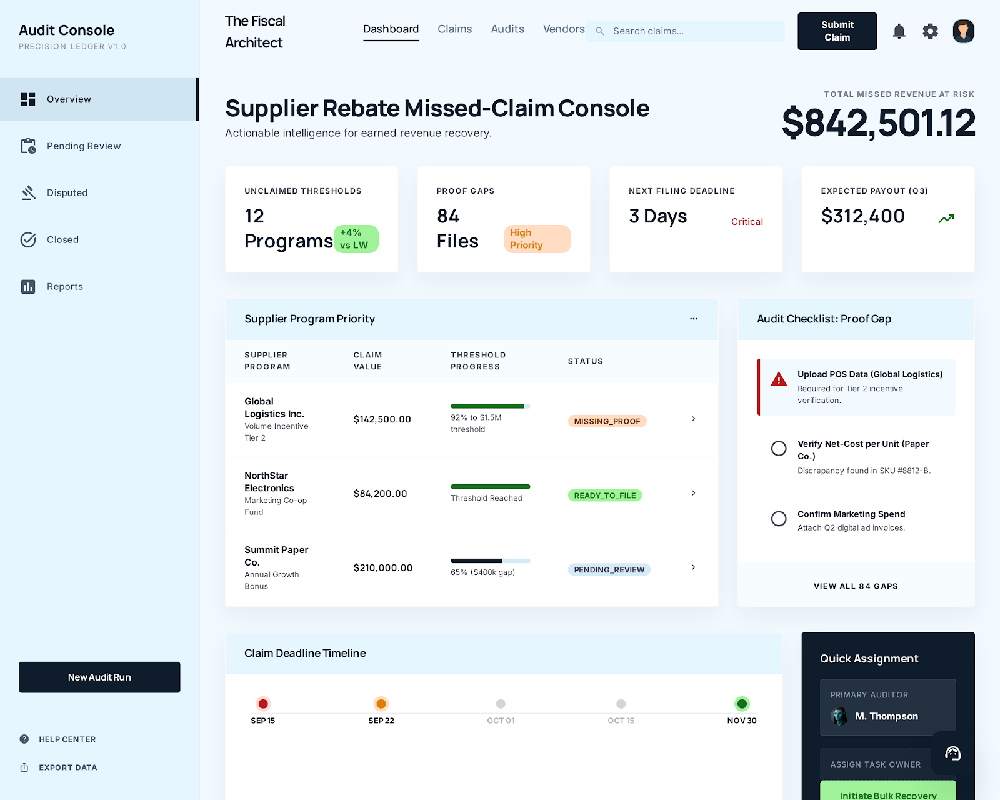

PF SAFE DEMO · 2026-04-10-p001
Supplier Rebate Missed-Claim Console
An ops-finance dashboard that flags earned supplier rebates at risk of going unclaimed because proof, timing, or threshold tracking is incomplete.
ingest status
Imported from Stitch exportThe approved Stitch screen now ships through a local PF-safe wrapper for stable preview, build, and hosting.
- Source preserved as local artifact
- Public demo path avoids remote CDN dependency
- Preview uses the shipped Stitch screen
